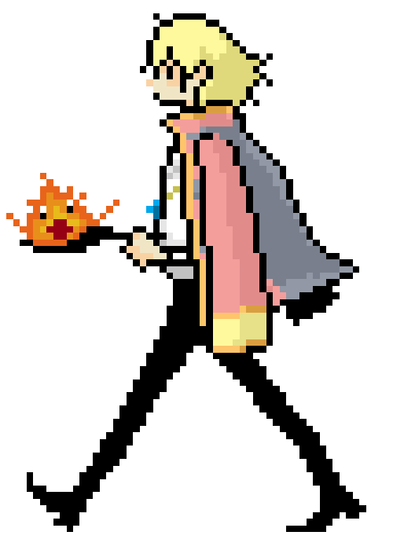

Hola preciosa, estas cordialmente invitada a tener una cita con el amor de tu vida. ¿Aceptas?
¿Qué tipo de comida te gustaría para nuestra cita?
Elige los que te gusten:
Te amo mucho. Gracias por estos 20 meses juntos y por tantas lindas memorias a tu lado. ¡Mi niña preciosa!